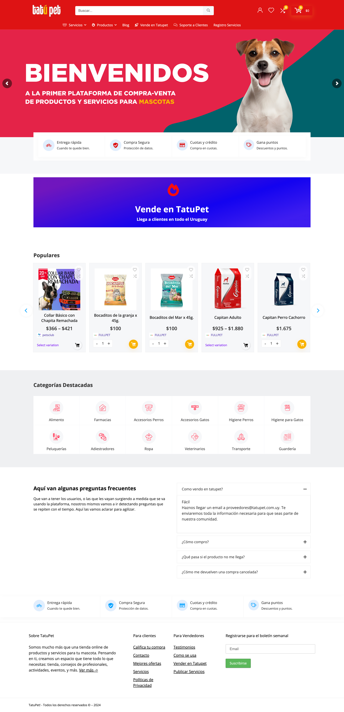

As the lead developer, I took charge of creating the Tatupet website, an e-commerce platform specializing in pet products and related services. This project presented unique challenges, particularly in developing a complex product delivery system that leverages geolocation technology to enhance the user experience.
One of the standout features of the Tatupet website is its sophisticated delivery system, which dynamically adjusts based on the user's location preferences. By geolocating the user's position and desired delivery location, the website triangulates whether the user is in close proximity to a seller in Montevideo or further away. This information enables the platform to present users with tailored purchasing options, optimizing the delivery process.
For users located near sellers in Montevideo, the website offers the option of delivery through Pedidos Ya, a popular local delivery service. Meanwhile, for users located farther away, the platform provides the option of delivery through Envigo, ensuring efficient and reliable delivery of pet products.
Through this innovative approach to product delivery, I successfully enhanced the Tatupet website's functionality and user experience, providing customers with convenient and personalized purchasing options based on their location.
Link TatuPet 